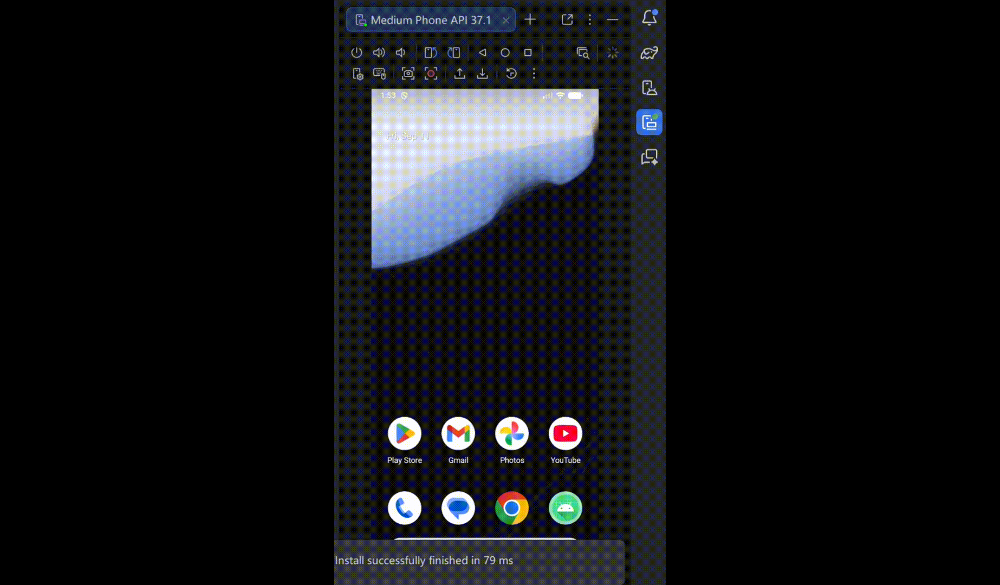
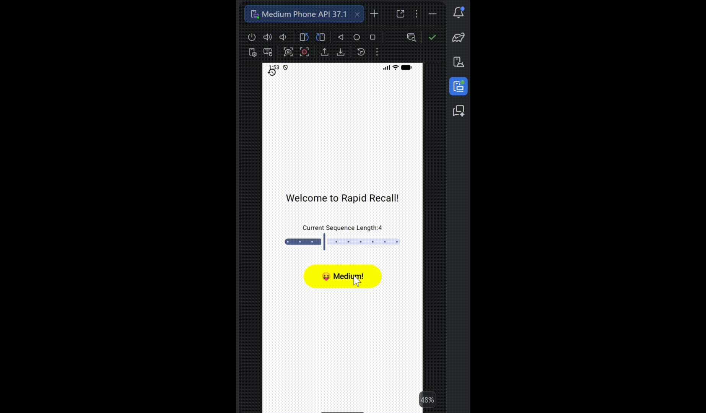
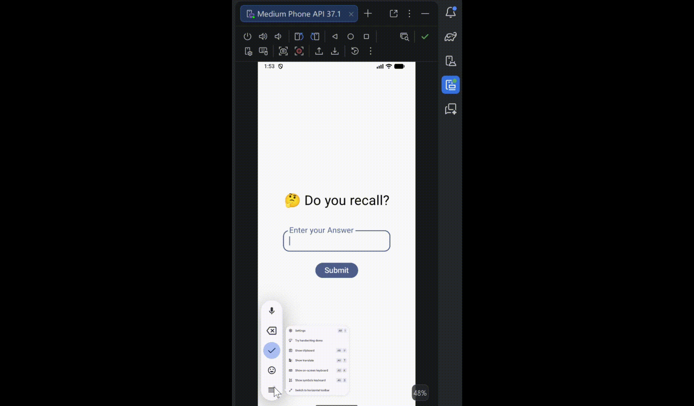
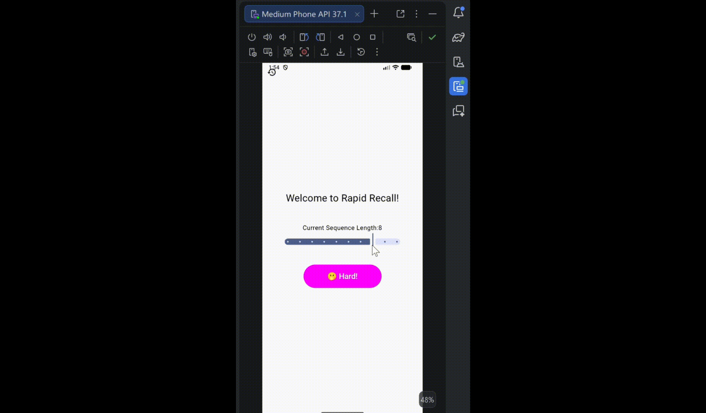
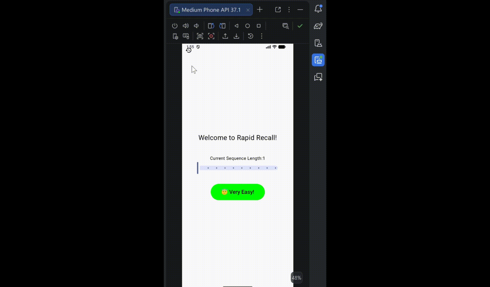

Back <<
• Attractive and friendly user interface.
• Follows the UDF Kotlin architecture using ViewModel class for session-wise persistent data storage and separate composable functions for different game screens.
• Uses Kotlin Coroutine to emit texts to create flashing sequence effects while maintaining the main game flow.
• An Android Device (apk file available) or Android Emulaters

Users specify their difficulty setting of this memory game by dragging the slider to choose desired sequence length.

When users confirm on the difficulty, the game rapidly display a sequence of numbers, one digit at a time and challenges the users to memorize them.

When users enter the input and click on sumbit, they immediately obtain a detailed feedback on their answer.
Click on the history tab to view previous attempts and total statistics. Each attempt contains details like original sequence, user input, correctness and timestamp based on system time.

When users submit a wrong answer, they also obtain a feedback where incorrect or missing digits are marked in red.

Second attempt is also logged!
https://github.com/demingQian/RapidRecall.git